00全景与读法
Dispatch 02 提出了昇腾 RL 的两条软件主线——FP8 量化 rollout与异步解耦。本期看它们的硬件对应物：昇腾 950 几乎是照着这两条线设计的。三个改变最关键：原生 FP8 把 FP8 量化 rollout 从设想变为可行；自研 HBM 加更大容量与带宽直接缓解 910B 上 rollout 与 train 争用 64 GB 显存的僵局；PR/DT 的硬件分工天然对应 RL 里 rollout（生成）与 train（更新）的解耦。代价是软件栈须同步跟进，且 950DT 要等到年底。
每一节固定三段：正文（来自原文，保留全部数字与限定语）/ 双栏对照（左栏灰为 CUDA 世界的默认做法，右栏橙为 昇腾上的现状，全文统一）/ 差在哪（下方色块：差异、原文是否给了理由、对 RL-on-NPU 的含义）。数字按来源标注：第三方 独立测量、自报 厂商或媒体口径、推断 本站分析。本篇全部规格（容量、带宽、PFLOPS、EFLOPS、上市时间）均为厂商 / 媒体 provisional 口径，无一经过实测复现。
一条贯穿全文的线索：硬件给的是空间，能力仍需软件实现。容量与带宽是硬件给的，显存腾挪（sleep-mode）是软件给的；原生 FP8 是必要条件，训推一致才是把它用对的充分条件；PR/DT 双 die 是分离式 RL 的载体，跨 die 编排仍要调度层专门支持。
01规格速览
950 拆成两颗：950PR（prefill / 推荐 / 推理，约 2026 Q1，128 GB HiBL 1.0，约 1.6 TB/s）与 950DT（decode / 训练，约 2026 Q4，144 GB HiZQ 2.0 HBM，约 4 TB/s，互联约 2 TB/s）。两颗都原生支持 FP8 / MXFP8 / HiF8 / MXFP4，算力约 1 PFLOPS FP8 / 约 2 PFLOPS MXFP4（950DT 同量级）。参照 910B：64 GB HBM、约 0.4 TB/s（带宽口径各源不一）、HCCS 互联、无原生 FP8。自报 数字来自华为 Connect 2025 与分析师 / 媒体口径，provisional，以实际出货为准。完整卡片见 Ascend / NPU 标签页（已补一张 Atlas 950 SuperPoD 卡）。
| Ascend 950PR | Ascend 950DT | 910B（参照） | |
|---|---|---|---|
| 定位 | prefill / 推荐 / 推理 | decode / 训练 | 训练 加 推理 |
| 上市 | 约 2026 Q1 | 约 2026 Q4 | 在售 |
| 显存 | 128 GB HiBL 1.0 | 144 GB HiZQ 2.0 HBM | 64 GB HBM |
| 带宽 | 约 1.6 TB/s | 约 4 TB/s | 约 0.4 TB/s（各源不一） |
| 互联 | — | 约 2 TB/s | HCCS |
| 低精度 | FP8 / MXFP8 / HiF8 / MXFP4 | 同左 | 无原生 FP8 |
| 算力 | 约 1 PFLOPS FP8 / 约 2 PFLOPS MXFP4 | 同量级 | — |
CUDA 世界的默认做法
单芯片以工艺、HBM 代际与能效领先（原文：单芯片华为仍落后于头部 GPU）；系统级以 NVL72 为对标物。规格口径通常有第三方实测可查。
昇腾上的现状
两颗芯片分工出货，PR 先到（Q1）、DT 年底（Q4）；显存 128 / 144 GB，带宽 1.6 / 4 TB/s，原生 FP8 / MXFP4。自报 全部规格待实测复现。
差在哪差在数字的可信度层级与时间：950 的每一个数字都是厂商与媒体口径，且训练与 decode 这颗最关键的 950DT 年底才推出，上半年可获得的主要是偏推理 / prefill 的 950PR。对 RL-on-NPU 的含义：2026 年上半年任何"950 上的 RL"都只能在 PR 上做 rollout 侧的准备，训练侧仍在 910B。
02自研 HBM：容量、带宽与显存争用
910B 时代，RL 最硬的约束是单卡 64 GB HBM：rollout 的 KV cache 加权重，与 train 的优化器状态加梯度共同占用同一块显存（见 NPU 架构页的"RL 显存争用"视图）。950DT 用华为自己的 HiZQ 2.0 HBM，144 GB @ 约 4 TB/s——容量翻倍多、带宽近 10×。自研 HBM 有两层意义。第一层是容量与带宽的台阶式跳变：910B 是 64 GB @ 约 0.4 TB/s，950DT 是 144 GB @ 4 TB/s，容量 2.25×、带宽约 10×。RL 训练的痛点在于同一张卡（或同一组卡）上既要容纳 rollout 阶段的推理权重加不断膨胀的 KV cache，又要容纳 train 阶段的训练权重、梯度、优化器状态（Adam 是参数量的若干倍）与激活；64 GB 时代这两套状态很早即无法容纳，工程上被迫做激进的时间分片（rollout 完成后把显存完全释放再换入训练态，反复切换，切换开销和复杂度都很高）。144 GB 让两套状态更晚才需互斥分片、甚至部分共存，10× 带宽让 decode-heavy 的 rollout 本身更快、KV 与权重搬运不再是根本限制——注意是"缓解"不是"消除"。第二层是供应链自主：HBM 是当前 AI 芯片供应链上最受制约的环节之一、高端 HBM 受出口管制影响显著，HiBL 1.0 / HiZQ 2.0 自研 HBM 的意义在于绕开对外部高端 HBM 的依赖，对一条要长期演进（950 → 960 → 970）的产品线，这是能不能持续放量的前提。

这张图怎么读
左框两条边都指向同一个"显存争用"节点，这是 910B 问题的结构：不是某一侧太大，而是两套状态必须共存于一块显存。右框有两条进入"缓解"的边，一条来自硬件（容量与带宽），一条来自软件配方（FP8 量化 rollout）——读到这里要注意两条边的性质不同，前者随 950DT 出货自动获得，后者要等第 03 节的算子与一致性工作完成。最值得看的位置是右下角那条虚线：它把"缓解"与"软件能力待补"连起来，表示即便显存争用缓解，rollout 与 train 之间的显存挂起、换出与快速切换仍是 vLLM 或训练框架层面的工程实现。粗箭头上的"自研 HBM 加原生 FP8"是从左框到右框的唯一通路，即硬件改变是缓解的前提而非全部。
CUDA 世界的默认做法
显存腾挪由软件完成：sleep-mode（rollout 与 train 之间把不用的显存挂起或换出、快速切换上下文）是 vLLM / 训练框架层面的工程实现，与显存大小无关。
昇腾上的现状
910B：64 GB @ 约 0.4 TB/s，两套状态很早即无法容纳，被迫激进时间分片，且无 sleep-mode。950DT：144 GB @ 约 4 TB/s（容量 2.25×、带宽约 10×，自报），争用更晚触及上限，但 sleep-mode 仍缺。
差在哪要划清一条线：容量带宽是硬件给的，显存腾挪能力是软件给的。950 把显存做大只是让这件事更不容易触及容量上限，并不会自动带来 sleep-mode。原文给出的理由是两套状态（rollout 的权重加 KV，train 的权重加梯度加优化器状态加激活）的共存问题在 144 GB 下只是推迟而非消失。对 RL-on-NPU 的含义：910B 上"无 sleep-mode"的痛点会随 950DT 与 FP8 rollout 明显减轻，但 sleep-mode 的等价方案仍要在 vLLM-Ascend 侧实现。
03原生 FP8/MXFP4：让 FP8 RL 从设想变为可行
910B 没有原生 FP8，做低精度需迂回实现。950 直接支持 FP8 / MXFP8 / HiF8 / MXFP4。把 Dispatch 02 的链条接上：Jet-RL / FP8-RL / Quantized Rollout 这些量化 rollout 配方，在 950 上有了硬件落点。"FP8 RL on Ascend"是一个几乎没有已有工作的选题——硬件这块拼图 2026 到位。为什么 FP8 对 RL 特别重要：RL 一轮迭代里 rollout 通常是时间大头（要生成海量轨迹），而 rollout 是 decode、memory-bound，瓶颈在访存带宽和显存容量。把 rollout 的权重和 KV cache 量化到 FP8，等于显著减少每次要搬运的字节数：显存占用降低（KV cache 能容纳更长序列或更大 batch）、有效带宽利用率提升（memory-bound 的 decode 直接受益）。910B 的问题在于没有原生 FP8，只能用更高精度模拟或反复量化 / 反量化，既消耗算力又消耗带宽，FP8 RL 更像纸面方案而非可运行的生产路径；950 提供原生 FP8 / MXFP4（约 1 PFLOPS FP8 / 约 2 PFLOPS MXFP4）让量化 rollout 从"模拟"变成"硬件直接执行"。
但 FP8 在 RL 里有真实风险。RL 对 rollout 与 train 的数值一致性极其敏感：典型分离式架构里 rollout 用 FP8 低精度采样、train 一侧可能跑更高精度，两侧对同一序列算出的 logprob 会漂移；RL 的策略梯度依赖 importance ratio（新旧策略概率比），infer 端 logprob 与 train 端不一致就直接放大 train-inference mismatch（轻则训练不稳、reward 噪声大，重则策略失稳），而 FP8 / MXFP4 叠加为新硬件重写的算子（数值行为可能与参考实现有细微差异）会进一步放大。对策两点：① align-probe——在训练管线里持续探测 rollout 与 train 两侧 logprob 偏差，把数值不一致作为一级指标监控，而非等 reward 恶化后才发现；② 训推一致的量化逻辑——让 infer 和 train 走同一套 FP8 量化语义（呼应 Miles 的"统一 FP8"），从源头压住漂移而非事后修补。原生 FP8 是必要条件，训推一致是把它用对的充分条件。
CUDA 世界的默认做法
量化 rollout 配方（Jet-RL / FP8-RL / Quantized Rollout，Dispatch 02）已有公开工作；MoE RL 的训推一致有 Miles 的"统一 FP8"方案（Dispatch 09）。FP8 是配方问题而非硬件问题。
昇腾上的现状
910B 无原生 FP8，只能高精度模拟或反复量化 / 反量化，FP8 RL 停留在纸面。950 原生 FP8 / MXFP8 / HiF8 / MXFP4（约 1 PFLOPS FP8 / 约 2 PFLOPS MXFP4，自报），但算子库要暴露 FP8 路径、量化 / 反量化 kernel、混精度调度，CANN 需完整支持；"FP8 RL on Ascend"几乎没有已有工作。
差在哪GPU 侧 FP8 RL 的难点在配方与一致性，昇腾侧在此之前还多一层硬件不支持；950 移除了后者，前者原样保留并因新算子而加重。原文给出了完整机理（decode memory-bound → FP8 减少搬运字节 → 但 logprob 漂移放大 importance ratio 误差）与两条对策。对 RL-on-NPU 的含义：谁先在 950 上完成端到端 FP8 RL 并公布 train-inference 一致性，谁就率先填补这一空白领域；align-probe 是把数值一致性变成一级监控指标的具体手段。
04PR/DT 分工：硬件层面的 prefill/decode（也是 rollout/train）解耦
华为把芯片拆成 PR（prefill / 推荐，算力密集、带宽次要）和 DT（decode / 训练，带宽与显存敏感）：用便宜的 HiBL 供给 prefill，用高带宽 HBM 供给 decode 与训练。这正好对上 RL 的结构——rollout 偏生成（decode）、train 偏更新——以及 AsyncFlow / RollMux 那类解耦 RL 的系统设计。硬件开始按"分离式"思路出货。
为什么 decode 端要堆带宽、prefill 端要堆算力。Transformer 推理两阶段在硬件上根本不对称。Prefill 是 compute-bound：处理输入提示时所有 prompt token 一次性进网络，每层做的是大矩阵乘（[seq_len, hidden] × [hidden, hidden]，seq_len 动辄上千），算术强度（每读一字节做多少次浮点运算）很高、数据复用充分、瓶颈在 FLOPS，延长 prompt 或加大 batch 基本就是在充分利用乘法器阵列——此时关键指标是算力，显存带宽满足供给即可。Decode 是 memory-bound：自回归生成每步只产一个 token，核心计算退化成 [1, hidden] × [hidden, hidden] 的矩阵-向量乘（GEMV），算术强度极低——为算这一个 token 得把整层权重和不断增长的 KV cache 从 HBM 搬进计算单元一遍、少量计算后即丢弃，乘法器大部分时间在等数据，决定吞吐的不是峰值 FLOPS 而是每秒能从显存搬运多少字节以及显存能否容纳越来越长的 KV cache——此时关键指标是带宽和容量。于是拆芯片就是对症下药：950PR 算力敏感而非带宽敏感，配相对廉价的 HiBL（带宽满足需求即可，把 die 面积和功耗集中在乘法器上，推荐系统的大规模前向同样 compute-heavy，共用合理）；950DT 带宽与容量敏感，配 HiZQ 2.0 HBM 4 TB/s（相对 PR 的 1.6 TB/s 是 2.5×，直接投向 decode 瓶颈）加 144 GB（让长 KV cache 和大模型权重不必那么早溢出），训练同理是带宽与容量敏感（梯度、优化器状态、激活反传）。这正好对应 RL 的两半：rollout 本质是 decode-heavy 的批量生成、memory-bound，瓶颈与 decode 同构；train 是 compute 加带宽混合但状态访存量巨大——把 prefill / decode 解耦成 PR / DT 两种 die，在系统层面天然就是把 RL 的 rollout 与 train 解耦，硬件分工和算法分工第一次实现对应，这也是"分离式 RL"能从论文走向落地的硬件前提。

这张图怎么读
先看两条横向链的第四个节点：PR 链收束在"便宜大容量、带宽次要"，DT 链收束在"高带宽、自研 HBM"——这是 compute-bound 与 memory-bound 两种负载在 die 级别的物理分配，也是图中所有其他关系的来源。再看两条"对应"边：原文把 PR 对应 rollout、DT 对应 train，读时要注意这是按负载类型的对应而非严格绑定——rollout 是 decode-heavy 的 memory-bound 负载，按第 04 节的分析它更接近 DT 的特性；原文的对应关系强调的是"两种 die 承载两种负载"的分离式结构本身。最值得看的位置是两条虚线的平行关系：上面一条是硬件层的 prefill / decode 解耦，下面一条是算法层的 rollout / train 解耦，图的论点是这两条线第一次在结构上实现对应。
CUDA 世界的默认做法
解耦 RL 是系统设计层面的事（AsyncFlow / RollMux 一类），在同构 GPU 上通过软件把 rollout 池与 train 池分开；prefill 与 decode 的 PD 分离同样在推理框架层实现。
昇腾上的现状
硬件层直接拆成两种 die：PR（HiBL，算力密集）与 DT（HiZQ HBM，带宽 / 显存敏感），带宽比 4 : 1.6 = 2.5×（自报）；但 rollout（PR / decode）与 train（DT）的跨 die 编排、KV / 权重路由、负载均衡需要调度层专门支持，目前是空白。
差在哪GPU 侧的分离靠软件在同构硬件上划分，昇腾把分离固化进硬件——好处是硬件分工与算法分工第一次对应，是分离式 RL 落地的硬件前提；代价是调度层必须专门支持跨 die 编排，软件缺位时硬件分工无法转化为 RL 收益。原文对 compute-bound / memory-bound 的不对称给出了完整推导。对 RL-on-NPU 的含义：PR/DT 加大互联是把 rollout / train 解耦到不同资源池的天然载体，正好接 Dispatch 02 的异步线。
05三个改变接上 Dispatch 02 的两条软件主线
三个改变与两条软件主线的对应是本篇的核心结构：原生 FP8 / MXFP4 是 FP8 量化 rollout 的硬件落点；PR 与 DT 分工加大互联接 AsyncFlow / RollMux 一类的异步解耦；自研 HBM 大容量缓解显存争用，从而支撑解耦，同时为低精度配方留出余量。

这张图怎么读
数边：三个改变发出四条边，两条软件主线各收到两条。异步解耦收到两条实线（PR/DT 分工、自研 HBM），说明它同时依赖分工与容量——分池之后每个池仍要装得下各自的状态；FP8 量化 rollout 收到一条实线（原生 FP8）与一条虚线（HBM 余量），说明它的硬前提只有一个，容量只是让低精度配方更从容。最值得看的位置是那条虚线：它表明三个改变不是一一对应两条主线，而是有交叉支撑——这也是为什么 950DT（同时带来 HBM 与 FP8）比 950PR 对 RL 更关键。
CUDA 世界的默认做法
两条软件主线（FP8 量化 rollout、异步解耦）已在 GPU 侧有公开工作与系统实现，硬件前提早已满足，主线的推进只受软件成熟度制约。
昇腾上的现状
910B 上两条主线都缺硬件前提（无原生 FP8、64 GB 争用、无分离式 die）；950 逐项补齐硬件前提，但软件栈（CANN / vLLM-Ascend / MindSpeed-RL）尚未跟上。
差在哪差在主线被卡在哪一层：GPU 侧卡在软件，昇腾侧此前卡在硬件、950 之后也卡在软件。原文的判断是 950 几乎照着 Dispatch 02 的两条线设计。本站判断：这意味着昇腾 RL 的路线图在 950 之后与 GPU 侧同构，差异转为软件栈的时间差与数值一致性的验证负担。
06放进 SuperPoD：仍是"规模补效率"
单芯片华为仍落后（节点工艺、HBM 代际、能效）。它的答案一直是规模聚合：Atlas 950 SuperPoD 最多 8,192 颗 950DT（约 CM384 的 20×），UnifiedBus 互联约 16 PB/s，系统级约 8 EFLOPS FP8 / 16 EFLOPS FP4。路线图 950（2026）→ 960（2027）→ 970（2028），每代算力大致翻倍，2028 目标 4 ZettaFLOPS FP4。思路和 CM384 对标 NVL72 一脉相承（见 Ascend 标签的"scale vs efficiency"卡）：用超节点聚合补单芯片效率。对大规模 RL 意味着：可以把 rollout 池和 train 池分到不同芯片或机柜，用大互联带宽支撑跨池通信。单芯片维度 950 仍落后于头部 GPU（约 1 PFLOPS FP8 单卡不是用来单点对标的），所以读这套规格要按"集群级"而非"单卡级"。自报 EFLOPS、PFLOPS、带宽均待实测复现。

这张图怎么读
这张图有一个入口（单芯片落后）和三个出口（rollout 池、train 池、路线图），读法是看聚合节点如何把弱点转成结构：单芯片效率不足不是靠单芯片解决，而是靠 8,192 颗的互联规模与每代翻倍的节奏。分池那两个节点之间是虚线而非实线，表示跨池通信依赖 16 PB/s 的互联，这是 SuperPoD 对 RL 的具体价值——第 04 节的 PR/DT 分工在机柜级别再做一次。最值得看的位置是路线图链的最后一个节点"4 ZettaFLOPS FP4"：它是 2028 目标，读数时要与"每代大致翻倍"连起来看，这是一条承诺曲线而非已交付曲线。
CUDA 世界的默认做法
以单芯片效率为基础，系统级以 NVL72 为代表；规模与效率两者兼有。
昇腾上的现状
以规模聚合补单芯片效率：SuperPoD 8,192 颗 950DT、16 PB/s UnifiedBus、8 EFLOPS FP8 / 16 EFLOPS FP4（自报）；对标关系是 CM384 对 NVL72 的延续。
差在哪差在效率的来源：一侧来自单芯片，一侧来自互联规模。原文的理由是工艺、HBM 代际与能效的差距短期无法补齐。对 RL-on-NPU 的含义：rollout 池与 train 池的分离在 SuperPoD 层面有了物理载体，但跨池通信量与 staleness 的关系（Dispatch 02 的异步线）需要在 16 PB/s 的实际可达带宽下重新评估——这一带宽同样是厂商口径。
07对 RL-on-NPU 的含义与现实约束
四点含义。显存争用被硬件部分缓解：144 GB 加 4 TB/s 让 rollout / train 不必那么早时间分片，叠加 FP8 量化 rollout（占用更小），910B 上"无 sleep-mode"的痛点会明显减轻——但 sleep-mode 是软件能力，950 并不自动带来它。FP8 RL 成为高新颖度选题：硬件就位后，谁先在 950 上完成端到端 FP8 RL 并公布 train-inference 一致性，谁就率先填补这一空白。分离式 RL 有了对口硬件：PR/DT 加大互联是把 rollout / train 解耦到不同资源池的天然载体。数值漂移需重点监控：FP8 / MXFP4 加 NPU 上重写的算子会放大 train-inference mismatch，这正是看板里 align-probe 想法的用武之地。
三项现实约束。软件是真瓶颈，不是算力：CANN / vLLM-Ascend / MindSpeed-RL 要把 FP8 RL、sleep-mode 等价物、新算子全部跟上，硬件领先不等于栈成熟。950DT 要等到约 Q4 2026：训练与解码这颗最关键的年底才推出，上半年可获得的主要是 950PR。规格都还是厂商口径：EFLOPS、PFLOPS、带宽都待实测复现，本看板一律按 provisional 标注。硬件就位不等于软件可用——950 在硬件上提供了应有的能力，但每一项都对应一块需要软件栈跟上的空白：
| 能力 | 硬件（950 提供） | 软件（待 CANN / vLLM-Ascend / MindSpeed-RL 跟上） |
|---|---|---|
| 原生 FP8 计算 | FP8 / MXFP4 计算单元就位，约 1 PFLOPS FP8 / 约 2 PFLOPS MXFP4 | 算子库要暴露 FP8 路径、量化 / 反量化 kernel、混精度调度；CANN 需完整支持 |
| sleep-mode 显存腾挪 | 144 GB 大容量加 4 TB/s 带宽，更晚触及容量上限 | rollout / train 间显存挂起、换出、上下文快速切换，纯软件能力，硬件不自动带来 |
| FP8 RL 训推一致 | 原生 FP8 让量化 rollout 可运行 | 统一 FP8 量化语义、align-probe 监控、importance ratio 对齐，需 MindSpeed-RL 落地 |
| 新算子（稀疏注意力等） | 算力 / 带宽底座具备 | 稀疏注意力、长序列、PD 分离专用 kernel 要逐个重写并调优，数值还要对齐参考实现 |
| PR-DT 分离式调度 | PR/DT 双 die 加 UnifiedBus 互联（2 TB/s 互联，16 PB/s 总线） | rollout（PR / decode）与 train（DT）的跨 die 编排、KV / 权重路由、负载均衡，调度层要专门支持 |
CUDA 世界的默认做法
上表右列的每一项——FP8 路径、sleep-mode、统一 FP8 语义、专用 kernel、PD 分离调度——在 GPU 软件栈中已有实现或公开工作，硬件与软件同时可用。
昇腾上的现状
五项能力的硬件底座随 950 到位（DT 部分要等 Q4），软件五项全部待补；CANN / vLLM-Ascend / MindSpeed-RL 的成熟度决定表中多少能力真能用上。
差在哪硬件抬高上限，软件决定可达。原文明确把软件列为真瓶颈，并把三项约束（软件、DT 时间、规格口径）并列。本站判断：五项软件空白中，align-probe 与统一 FP8 语义是其余四项的前置——没有数值一致性验证，FP8 路径、新算子与分离式调度的收益都无法被信任。
08总表：CUDA 默认做法 vs 昇腾现状
| 主题 | CUDA 世界的默认做法 | 昇腾上的现状（910B → 950） | 本站判断 / 对 RL 的含义 |
|---|---|---|---|
| 规格可信度 | 第三方实测可查 | 全部厂商 / 媒体口径，provisional；DT 约 Q4 2026 到位 | 上半年仅能在 PR 上做 rollout 侧准备 |
| 显存争用 | sleep-mode 由 vLLM / 训练框架实现 | 910B 64 GB @ 约 0.4 TB/s 被迫时间分片；950DT 144 GB @ 约 4 TB/s（2.25× / 约 10×）缓解，仍无 sleep-mode | 缓解不是消除；sleep-mode 等价物仍要软件实现 |
| FP8 rollout | 量化 rollout 配方与 Miles 统一 FP8 已有公开工作 | 910B 无原生 FP8；950 原生 FP8 / MXFP8 / HiF8 / MXFP4，约 1 PFLOPS FP8 / 约 2 PFLOPS MXFP4；CANN 路径待补 | FP8 RL on Ascend 是空白领域；align-probe 加统一量化语义是前置 |
| rollout / train 解耦 | AsyncFlow / RollMux 一类系统在同构 GPU 上分池 | PR（HiBL，算力密集）/ DT（HiZQ HBM，带宽敏感）双 die，带宽 2.5×；跨 die 调度空白 | 硬件分工与算法分工首次对应，是分离式 RL 的硬件前提 |
| 系统规模 | 单芯片效率加 NVL72 级系统 | SuperPoD 8,192 颗 950DT（约 CM384 的 20×），16 PB/s，8 EFLOPS FP8 / 16 EFLOPS FP4；950 → 960 → 970 每代翻倍 | 按集群级而非单卡级读规格；跨池通信依赖互联实测 |
| 供应链 | 依赖外部高端 HBM | HiBL 1.0 / HiZQ 2.0 自研 HBM，绕开出口管制制约 | 长期演进产品线能否持续放量的前提 |
| 软件栈 | 硬件与软件同时可用 | 五项能力硬件到位、软件全部待补（第 07 节表） | 软件是真瓶颈，硬件领先不等于栈成熟 |
09原文没给的东西与未能核实的东西
以下是复现或选型时必须自行确定、原文未给理由，或仅有厂商口径而无独立复现的条目：
- 全部 950 规格（128 / 144 GB、1.6 / 4 TB/s、2 TB/s 互联、约 1 PFLOPS FP8 / 约 2 PFLOPS MXFP4、上市时间）：华为 Connect 2025 与分析师 / 媒体口径，无实测；
- 910B 带宽约 0.4 TB/s：原文注明各源口径不一，"带宽约 10×"的比较基线因此不确定；
- SuperPoD 数字（8,192 颗、16 PB/s、8 EFLOPS FP8 / 16 EFLOPS FP4、约 CM384 的 20×）与 950 → 960 → 970 每代翻倍、2028 年 4 ZettaFLOPS FP4：路线图承诺，非交付数据；
- HiBL 1.0 与 HiZQ 2.0 的工艺、代际与能效：原文仅指出单芯片在工艺、HBM 代际、能效上仍落后，未给出量化差距；
- HiF8 与 MXFP8 的数值格式细节：原文列出支持的格式名称，未说明与 FP8 E4M3 / E5M2 等参考格式的关系；
- FP8 rollout 在 950 上的实际收益：原文给出机理（memory-bound decode 受益于字节数减少）但无 950 上的吞吐或显存实测；
- PR/DT 跨 die 调度的延迟与带宽实测：2 TB/s 互联为厂商口径，跨 die 路由 KV 与权重的实际代价未知；
- CANN / vLLM-Ascend / MindSpeed-RL 的 FP8 与 sleep-mode 时间表：原文列为待跟上的空白，无官方时间点；
- 原文引用的媒体与分析师报道未附链接，本页无法给出可点击的一手来源；本页无原图，全部为本站图。
一、硬件给空间，软件给能力。144 GB 与 4 TB/s 推迟显存争用，但 sleep-mode、FP8 路径、跨 die 调度全是软件能力；950 抬高的是上限，CANN / vLLM-Ascend / MindSpeed-RL 的成熟度决定可达。
二、原生 FP8 是必要条件，训推一致是充分条件。FP8 rollout 的 logprob 漂移会经 importance ratio 直接进入策略梯度，新硬件的重写算子进一步放大；align-probe 加统一 FP8 量化语义应先于任何 FP8 RL 实验就位。
三、分离式 RL 第一次有了对口硬件。PR/DT 双 die 加 SuperPoD 互联是把 rollout 池与 train 池分开的物理载体，与 Dispatch 02 的异步解耦线直接衔接；但 950DT 年底才到，2026 年上半年只能做 PR 侧准备。
CANN / vLLM-Ascend 何时把 FP8 RL 路径打通，以及有没有 sleep-mode 的等价方案 · 950DT 出货后的真实 HBM 带宽与能效实测，对照 910B 看 RL 吞吐提升 · 第一篇"950 加 FP8 RL"的端到端工作——这会是 RL-on-NPU 最有分量的里程碑。